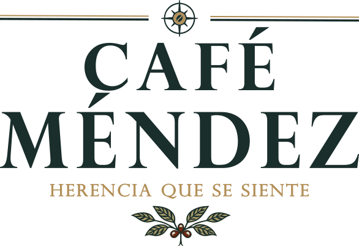
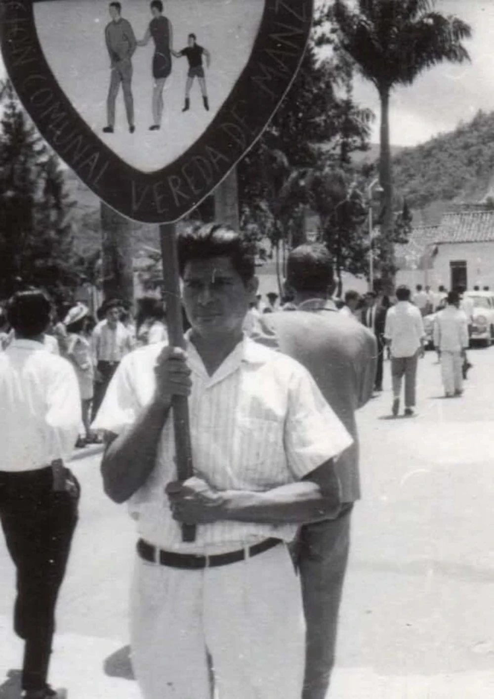
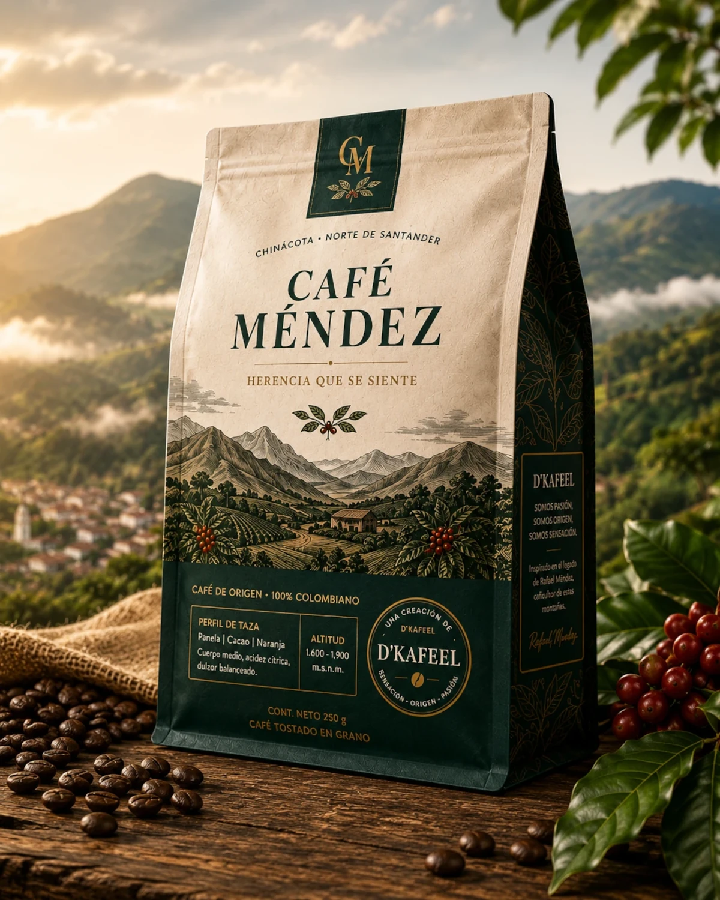
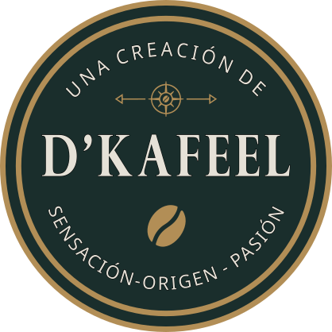

Café de origen inspirado en el legado cafetero de Rafael Méndez y las montañas de Norte de Santander.

La historia de CAFÉ MÉNDEZ nace mucho antes de la creación de la marca.
Sus raíces se encuentran en las montañas de Norte de Santander, donde Rafael Méndez y Teresa González dedicaron su vida al trabajo agrícola en la vereda Manzanares de Chinácota.
Hoy, cada taza busca honrar esa herencia y proyectarla hacia las nuevas generaciones.
Origen disponible.
Próximamente.
Próximamente.

Cada lote es seleccionado para representar el carácter de las montañas nortesantandereanas.
Consultar disponibilidad
D'KAFEEL desarrolla productos con identidad, origen y propósito, conectando tradición, territorio e innovación.